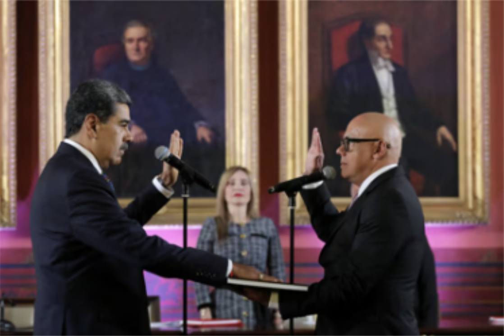

Maduro se proclama presidente sin mostrar las pruebas de su triunfo
Juan Diego Quesada / Florantonia Singer / Alonso Moleiro | Bogotá / Caracas
El mandatario venezolano jura el cargo por otros seis años envuelto en acusaciones de fraude. Edmundo González, que había prometido estar hoy en Caracas, continúa en República Dominicana.
—- América da la espalda al dirigente chavista en su "fraudulenta" toma de posesión